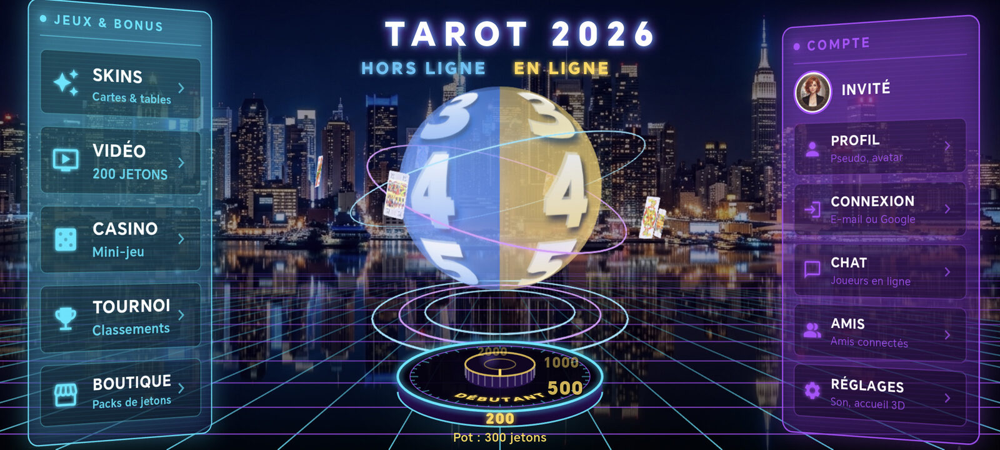

ब्राउज़र, Linux और Android पर ऑनलाइन टैरो गेम
गॉथिक टैरो 2026 की आधिकारिक वेबसाइट पर आपका स्वागत है, जो Android के लिए एक सोशल टैरो गेम है। सुनहरे सजावट वाली गॉथिक दुनिया में, 3, 4 और 5 खिलाड़ियों के फ़्रेंच टैरो नियमों के साथ, दूसरों के ख़िलाफ़ ऑनलाइन खेलें या AI के ख़िलाफ़ अकेले अभ्यास करें।
Android पर, सीधे अपने ब्राउज़र में या Linux पर खेलें: रियल-टाइम मल्टीप्लेयर टेबल से जुड़ें या कोई दूसरा खिलाड़ी न होने पर भी अकेले गेम शुरू करें।
टैरो स्कूल
क़दम-दर-क़दम टैरो खेलना सीखें: एनिमेटेड पाठ, मार्गदर्शित खेल और समझाए गए नियम। मुफ़्त।
टैरो स्कूल देखें

ऑनलाइन गेम्स और सोलो
दूसरे टैरो प्रेमियों से ऑनलाइन मुक़ाबला करें या आर्टिफ़िशियल इंटेलिजेंस के ख़िलाफ़ अकेले अभ्यास करें।
गॉथिक टैरो
बारीक सुनहरे विवरणों से सजे शानदार, गहरे गॉथिक सौंदर्य में डूब जाएँ।
कार्ड गेम के नियम
3, 4 और 5 खिलाड़ियों के लिए फ़्रेंच टैरो के पूरे नियम, कॉन्ट्रैक्ट की रणनीतियाँ और अंकों की गिनती सीखें।
Tarot Gothique 2026 डाउनलोड करें: Android, Web, Linux और Windows
अपना प्लेटफ़ॉर्म चुनें: वही टैरो कार्ड गेम, AI के ख़िलाफ़ अकेले या ऑनलाइन दूसरे खिलाड़ियों के साथ।
Linux
64-बिट Linux पीसी के लिए .tar.gz आर्काइव (Ubuntu, Debian, Fedora…)।
Linux के लिए डाउनलोड करें इंस्टॉलेशन गाइड (अंग्रेज़ी में)गॉथिक टैरो कार्ड गेम कैसे खेलें?
गॉथिक टैरो पारंपरिक फ़्रेंच टैरो का पालन करता है: 78 कार्ड, हर राउंड की शुरुआत में बोली, फिर एक टेकर जो ट्रिक दर ट्रिक बचाव पक्ष का सामना करता है। सिद्धांत कुछ ही मिनटों में समझ आ जाता है, पर महारत के लिए कई गेम लगते हैं: सही समय पर सही कार्ड जीतकर अपना कॉन्ट्रैक्ट पूरा करें।
गेम आपके लिए अंक गिनता है और हर राउंड के अंत में स्कोर तालिका दिखाता है, ताकि आप हिसाब के बजाय रणनीति पर ध्यान दे सकें।
कार्डों का मूल्य, Bouts और हर कॉन्ट्रैक्ट के लिए ज़रूरी अंक फ़्रेंच टैरो के पूरे नियम पेज पर विस्तार से बताए गए हैं।
3, 4 और 5 खिलाड़ियों का टैरो कार्ड गेम
- 3 खिलाड़ी: एक तेज़ गेम जिसमें हर कोई अपने लिए खेलता है। हर खिलाड़ी को 24 कार्ड मिलते हैं और 6 कार्ड “डॉग” (chien) बनाते हैं।
- 4 खिलाड़ी: मानक प्रारूप: हर खिलाड़ी को 18 कार्ड, डॉग में 6, और तीन रक्षकों के ख़िलाफ़ एक अकेला टेकर।
- 5 खिलाड़ी: हर खिलाड़ी को 15 कार्ड मिलते हैं और 3 कार्ड डॉग बनाते हैं। टेकर एक बादशाह को बुलाता है। जिसके पास वह बादशाह होता है, वह उस राउंड के लिए उसका गुप्त साथी बन जाता है, और बाक़ी खिलाड़ियों को बुलाए गए बादशाह के खेले जाने से पहले उसे पहचानना होता है।
खिलाड़ियों की संख्या कुछ भी हो, टेकर को उन Bouts (Petit, तुरुप का 21 और Excuse) के आधार पर तय स्कोर तक पहुँचना होता है जो वह जीतता है: बिना Bout के 56 अंक, एक के साथ 51, दो के साथ 41 और तीनों के साथ 36। टेबल की ख़ाली सीटें AI भरता है, इसलिए आप अकेले भी 3, 4 या 5 खिलाड़ियों के साथ खेल सकते हैं।
गॉथिक टैरो का रूप
गॉथिक टैरो बुलाए गए बादशाह के लिए एक ख़ास नियम लागू करता है: पहली ट्रिक में उसका रंग केवल उसी बादशाह से शुरू किया जा सकता है। इसे गेम के नियमों के साथ विस्तार से समझाया गया है।
मोबाइल गेम्स: मुफ़्त एंड्रॉइड ऐप, सोलो या मल्टीप्लेयर
अपनी गति से नियम सीखने के लिए आर्टिफ़िशियल इंटेलिजेंस के ख़िलाफ़ अकेले अभ्यास करें, फिर दूसरे टैरो प्रेमियों को चुनौती देने के लिए रियल-टाइम मल्टीप्लेयर टेबल से जुड़ें।
गेम डाउनलोड करना और खेलना मुफ़्त है: AI के ख़िलाफ़ ऑफ़लाइन गेम का कोई ख़र्च नहीं, और ऑनलाइन टेबल पर खेलकर कमाए गए चिप्स इस्तेमाल होते हैं। चिप्स और कस्टमाइज़ेशन आइटम (कार्डों के पीछे का डिज़ाइन, टेबल मैट) वैकल्पिक इन-ऐप ख़रीदारी के रूप में भी उपलब्ध हैं। विज्ञापन संयमित रहते हैं और चल रहे गेम को कभी नहीं रोकते। ऐप और यह वेबसाइट पंद्रह भाषाओं में उपलब्ध हैं।

गॉथिक टैरो: एक अनोखी वीडियो गेम दुनिया
डूबा देने वाली गेम टेबल, सुनहरी किनारी वाले कार्ड और गिरजाघर जैसी सजावट: गॉथिक टैरो 2026 को Cyril Darbost ने डिज़ाइन और विकसित किया, ताकि दोस्तों के साथ गेम नाइट के असली नियमों के प्रति वफ़ादार और मज़बूत दृश्य पहचान वाला टैरो गेम पेश किया जा सके।
गेम की टेबल और इंटरफ़ेस गेम के स्क्रीनशॉट की गैलरी में देखें, या प्रोजेक्ट की कहानी परिचय और अक्सर पूछे जाने वाले सवाल पेज पर पढ़ें।
कार्ड गेम का AI जो आपके खेलने का तरीका याद रखता है
गॉथिक टैरो में आर्टिफ़िशियल इंटेलिजेंस टेबल की ख़ाली सीटें भरता है: वह बोली लगाता है, 5 खिलाड़ियों में बादशाह बुलाता है, अपने कार्ड खेलता है और इंसानी खिलाड़ी की तरह अंक गिनता है। वह कभी भी नियम-विरुद्ध चाल नहीं चलता।
- राउंड की याददाश्त: वह खेला गया हर कार्ड याद रखता है, नोट करता है कि हर खिलाड़ी के पास कौन-से रंग नहीं हैं और जानता है कि किसके तुरुप ख़त्म हो चुके हैं।
- हर ट्रिक पर संभावनाएँ: कार्ड चुनने से पहले वह तुरुप से कटने के जोखिम और ट्रिक जीतने की संभावना का अनुमान लगाता है।
- Petit का प्रबंधन: बहुत सारे तुरुप होने पर वह उसे आख़िरी ट्रिक तक ले जाने की कोशिश करता है; वरना जैसे ही कोई सुरक्षित ट्रिक आती है, उसे बचा लेता है।
- आपकी आदतें: एक राउंड से दूसरे राउंड तक वह हर खिलाड़ी की दस आदतों पर नज़र रखता है, जैसे जल्दी तुरुप निकलवाना या टेकर की ट्रिक में अंक डालना। ये प्रोफ़ाइल आपके फ़ोन पर ही रहती हैं।
- 7% मानवीय कारक: वह कभी-कभी अपना खेल बदलता है, केवल उन कार्डों पर जिनका कोई महत्व नहीं, और कभी अंक नहीं गँवाता।
वीकेंड टूर्नामेंट में बॉट्स का स्तर आपकी श्रेणी के अनुसार ढलता है: ग्रीन श्रेणी में वे 30% बेतरतीब चालें चलते हैं, येलो में 12% और रेड में बिल्कुल नहीं। पूरी जानकारी गेम का AI कैसे काम करता है पेज पर है।
टैरो गेम के बारे में अक्सर पूछे जाने वाले सवाल
क्या गॉथिक टैरो मुफ़्त है?
हाँ, इसे डाउनलोड करना और खेलना मुफ़्त है। AI के ख़िलाफ़ ऑफ़लाइन गेम मुफ़्त हैं; ऑनलाइन टेबल पर खेलकर कमाए गए चिप्स इस्तेमाल होते हैं। चिप्स और कस्टमाइज़ेशन आइटम वैकल्पिक इन-ऐप ख़रीदारी के रूप में भी उपलब्ध हैं। विज्ञापन संयमित हैं और चल रहे गेम को कभी नहीं रोकते।
क्या मैं AI के ख़िलाफ़ अकेले टैरो खेल सकता/सकती हूँ?
हाँ। सोलो मोड आपको आर्टिफ़िशियल इंटेलिजेंस के सामने खड़ा करता है, जो नियम सीखने या दोस्तों के साथ गेम के बीच अभ्यास के लिए आदर्श है।
टैरो कितने खिलाड़ियों के साथ खेला जाता है?
गेम तीन क्लासिक प्रारूप देता है: 3, 4 या 5 खिलाड़ी। 5 खिलाड़ियों में टेकर गुप्त साथी चुनने के लिए एक बादशाह बुलाता है।
यह मोबाइल गेम किन डिवाइसों पर खेला जा सकता है?
Tarot Gothique 2026 Android (Google Play के ज़रिए स्मार्टफ़ोन और टैबलेट), सीधे वेब ब्राउज़र में और Linux पर खेला जा सकता है; Windows के लिए विशेष रूप से बना संस्करण अब ख़रीदा जा सकता है। यह गेम और यह साइट 15 भाषाओं में उपलब्ध हैं।